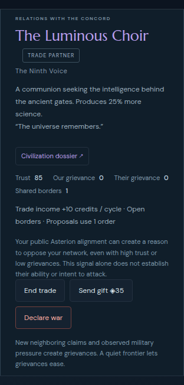
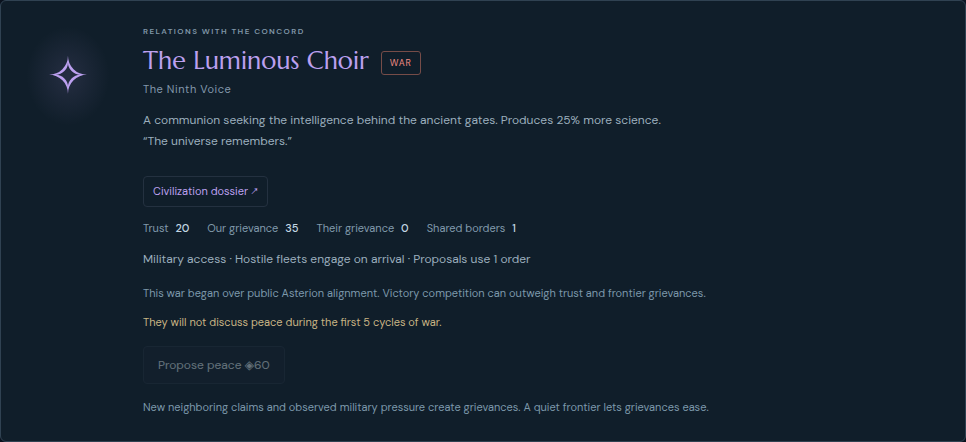

Explain a possible public alignment incentive before war; preserve a validated authored cause after real intervention declarations. No rule, choice, timing, cost or RNG changes.
Commit 450f6d73caf27f169618b1308d370506ec1cca9a from baseline 93a62961e994994d30c05240b17c39a418020473.
412 Node tests, seven focused browser scenarios and production build pass. Across the existing default177 and Odyssey280 recorded commands, every post-command mechanical state and RNG value matches baseline;457 JSON reload-next-command comparisons pass. These are history/behavior checks, not evidence of new engagement.
Mechanical equality removes only optional relation.warCause and the exact authored appended declaration sentence. Baseline independently matches the actual final exports. Existing recorded player commands are replayed; this is not new play or a balance cohort.
Warning is independent of rival fleet capability, budgets, technology and intent. Explicit AI cause marker is accepted only when contacted public race facts support it. Raw private reason strings are never saved or rendered.
Metadata is optional, typed, war-only and mirrored across the pair; peace and ordinary later war clear it. Existing wars without metadata retain their exact recorded cause rather than being relabeled.
Read-only current implementation view of replay-derived default53: actual historical trust85 and grievance0, with a public incentive warning that states its uncertainty.

Replay-derived default55 retains the authored cause after save/reload. Legacy actual55 has no cause tag and is not retroactively relabeled.

Exact paired comparison · Four production UI inspections · Handoff and English strings · Comparison source · Independent baseline critique